Project overview
The National AI Research Resource (NAIRR) provides U.S.-based researchers with access to high-performance computing, datasets, and AI tools to advance cutting-edge research. Ensuring that researchers are well-trained in leveraging these resources is critical to national progress in science and technology.
This collaborative project between Oakland University and Worcester Polytechnic Institute aims to increase awareness and broaden adoption of the NAIRR Pilot. It organizes two annual workshop series (12 workshops in total) over two years, focused on three high-impact domains: AI for cybersecurity and trustworthy AI, edge AI, and AI for autonomous driving.
The workshops offer hands-on training, showing how NAIRR's computational resources, datasets, and frameworks can be integrated into research and development workflows. The goal is to prepare researchers to develop secure, efficient, and scalable AI systems, and to equip students for the evolving AI workforce.
Goals
- Increase awareness and understanding of NAIRR among academic and industry stakeholders
- Provide applied, domain-specific training in cybersecurity, edge computing, and autonomous systems
- Build institutional capacity to use NAIRR resources at scale
- Encourage interdisciplinary collaboration on national research challenges
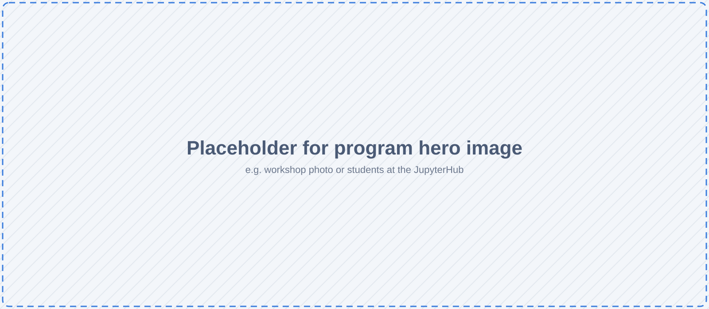
Themes
AI for Cybersecurity & Trustworthy AI
Adversarial AI, threat detection, and responsible deployment of AI systems.
Edge AI
Designing and optimizing lightweight models for resource-constrained and embedded environments.
AI for Autonomous Driving
Training and evaluating models for perception, planning, and control on NAIRR infrastructure.
How the series fits together
Everyone starts with the introduction. Each theme then has its own sequence, and the case studies combine them.
Adapted from the series diagram in WPI-LIONS-Group/NAIRR-Workshops.
Workshops
Materials from the first run of the series (2026 cohort). Notebooks live in each workshop's own repository, and all of them run in a browser on the project's JupyterHub. Recordings and slides will be linked here.
Each run of the series is kept as its own version, so you can always come back to the materials as they were for your cohort.
Show:
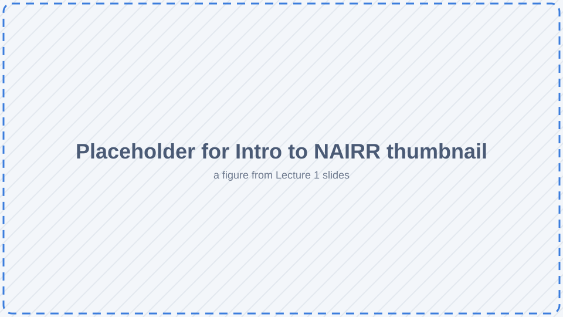
Session 1Introduction to NAIRR: Tools and Project Walkthrough
What NAIRR and Jetstream2 are, how to connect, and hands-on comparisons of local and cloud compute.
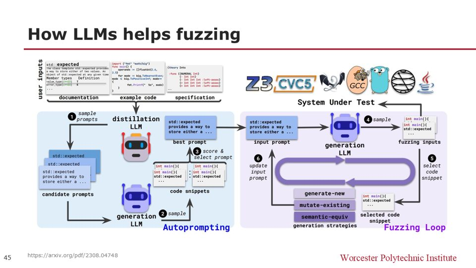
Workshop 2.1 · CybersecurityAI for Cybersecurity: Threats and Defenses
Binary classification and vulnerability detection with the NSL-KDD dataset.
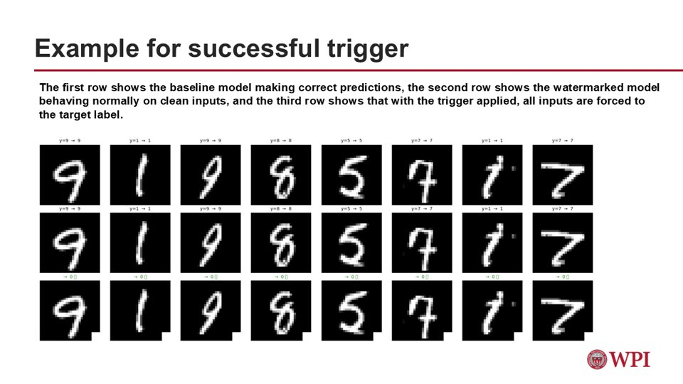
Workshop 2.2 · CybersecuritySecurity of AI Development Using NAIRR
Adversarial attacks and defenses, model inversion, digital watermarking, and LLM watermarking.
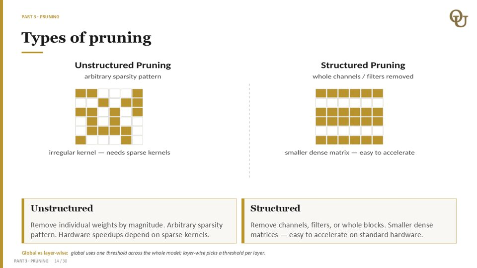
Workshop 3.1 · Edge AIEfficient Inference for Edge AI
Quantization, pruning, and knowledge distillation.
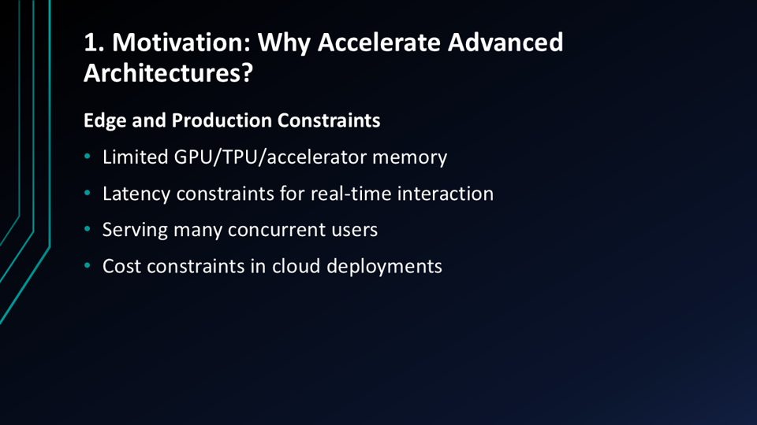
Workshop 3.2 · Edge AIDomain-Specific Optimization in Edge AI
Efficient ViT attention, LLM SmoothQuant, and diffusion model acceleration.
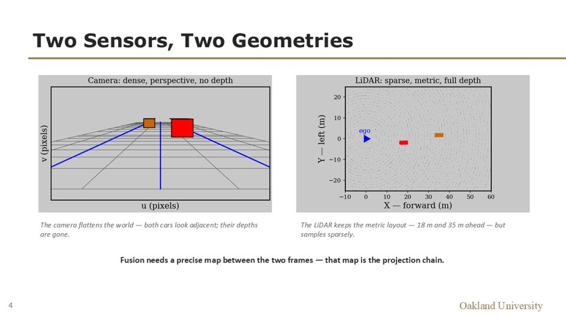
Workshop 4.1 · Autonomous drivingAI for Autonomous Driving
Sensor fusion and estimation on real KITTI driving data: camera–LiDAR projection, Kalman filtering from scratch, and LiDAR 3D detection and tracking.
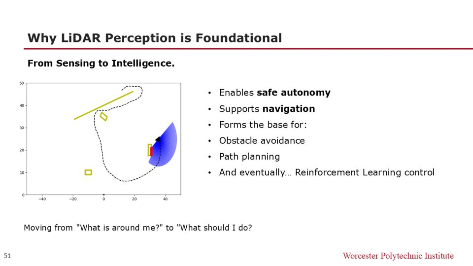
Workshop 4.2 · Autonomous drivingAI-Enabled Sensing and Controlling
Camera sensing, LiDAR sensing, and AI-based search and planning.
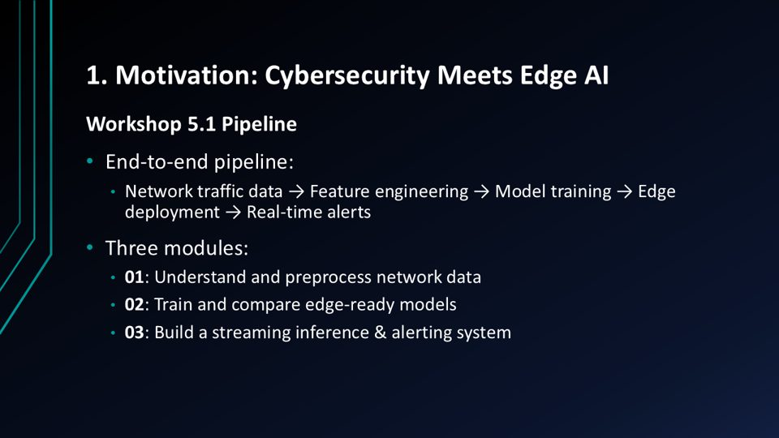
Workshop 5.1 · Case studyEdge AI and Cybersecurity in Action
Network traffic analysis, edge AI anomaly detection, and streaming inference with alerts.
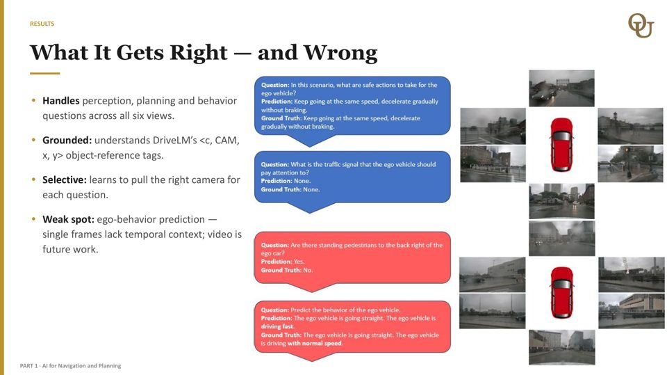
Workshop 5.2 · Case studyCybersecurity in Autonomous Driving
CAN-bus intrusion detection, sensor spoofing, and a DriveLM vision-language model.
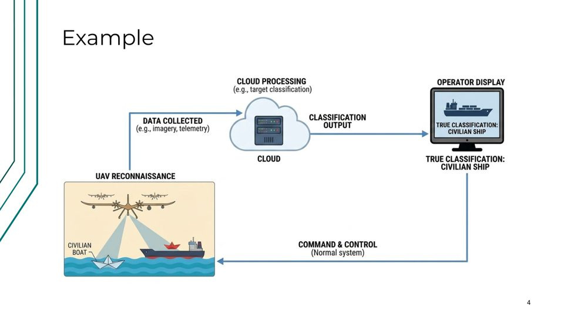
Workshop 5.3 · Case studyReal-time Control and Decision-Making with Edge AI
Agentic edge RAG, real-time decision-making, imitation learning, and intelligent offloading, with a small local LLM on CPU.
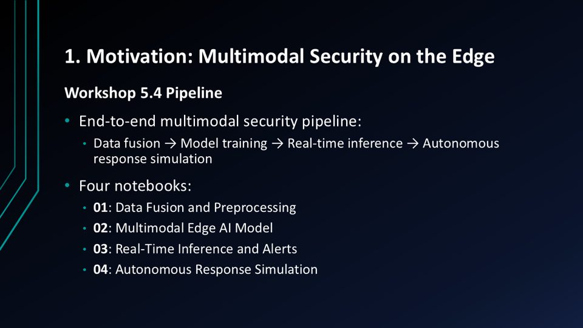
Workshop 5.4 · Case studyCybersecurity, Edge AI, and Autonomous Driving Combined
Multimodal data fusion, threat detection, real-time inference and alerts, and autonomous response simulation.
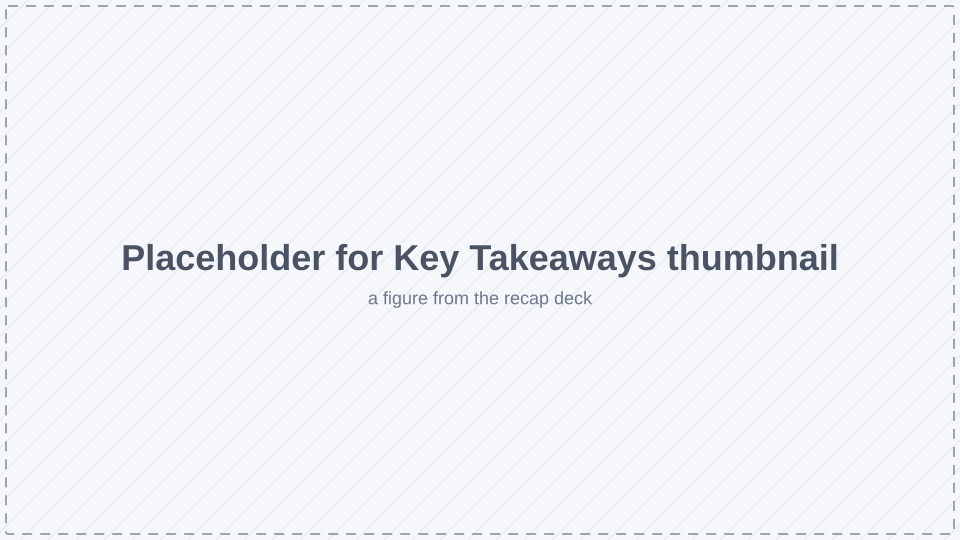
Session 6Key Takeaways and Future Directions
A lecture-only recap of the series.
Recording (YouTube) · Slides
Training resources
Materials are added here as workshops are completed:
- Workshop recordings Placeholder: YouTube playlist link
- Presentation slides Placeholder: slides links
- Hands-on lab exercises using NAIRR datasets and tools (linked from each workshop above)
- Tutorials and code examples for deploying scalable AI solutions
Research computing for OU and WPI groups
The Jetstream2 allocation behind these workshops also supports a small number of Oakland University and WPI research groups working with the project, by invitation. If your group would benefit, reach out to the project team.
Project team
Principal investigators
- Dr. Huirong Fu · Lead PI, Oakland University
- Dr. Jun Dai · PI, Worcester Polytechnic Institute
Co-principal investigators, Oakland University
- Dr. Darrin Hanna
- Dr. Lanyu Xu
- Dr. Mohammad Wardat
- Dr. Yao Qiang
Co-principal investigators, WPI
- Dr. Craig Shue
- Dr. Xiaozhong Liu
- Dr. Xiaoyan Sun
Students
- Placeholder: graduate students and REU undergraduates
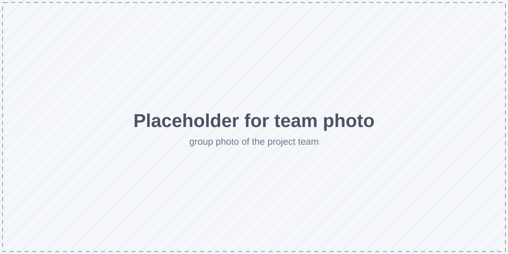
Contact
For more information or collaboration opportunities:
- Dr. Huirong Fu
Director, OU Center for Cybersecurity
fu@oakland.edu
- Dr. Jun Dai
Professor, Worcester Polytechnic Institute
jdai@wpi.edu